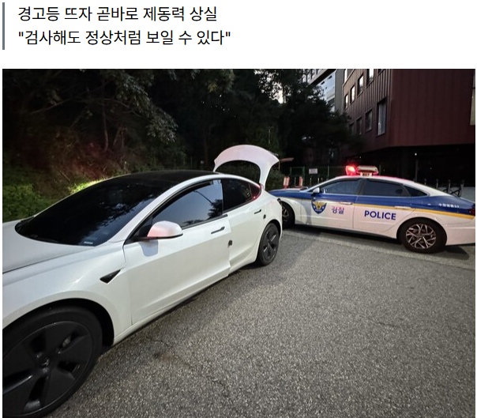

테슬라 차량을 모는 A씨는 지난 21일 저녁 내리막길 어린이보호구역을 벗어나던 중 브레이크가 전혀 듣지 않는 상황을 겪었다. 저전압 배터리 경고가 뜬 직후였다. 불과 며칠 전 서비스센터에서 소모품 교체와 점검을 받으며 이상 없다는 답을 들은 차량이었다.
화면에는 주차 브레이크가 작동하지 않을 수 있다는 경고가 떴다. 주차장을 빠져나가는 길이 오르막이라 A씨는 제동에 문제가 있다는 사실을 알아채지 못했다.
브레이크 페달을 밟아도 차는 내리막을 따라 속도를 줄이지 않았다. 그는 핸들을 틀어 오르막 쪽으로 차를 몰았고 회생제동이 더해지면서 가까스로 멈춰 섰다.
제동 불능을 인지한 곳은 어린이보호구역을 막 벗어난 지점이었다. 조금만 일찍 제동이 필요했다면 어린이 통행이 잦은 보호구역 안에서 차가 멈추지 못하는 상황이 벌어질 수 있었다.
A씨는 견인차를 부르고 경찰에도 신고했다. 출동한 경찰은 차를 더 이상 몰지 말고 곧바로 견인하라며 수리가 끝날 때까지 주행하지 말 것을 당부했다.
현장에 온 견인기사도 페달을 밟아본 뒤 "브레이크가 돌이네요, 전혀 안 되네"라는 반응을 보였다.
A씨와 통화한 서비스 엔지니어는 저전압 배터리 이상이 브레이크 성능 저하로 이어졌고 결국 작동 불능에 이르렀다고 설명했다. 저전압 배터리가 나가면서 브레이크를 비롯한 여러 기능이 한꺼번에 멈췄다는 것이다.
엔지니어는 저전압 배터리가 완전히 망가지기 직전까지 검사에서 정상처럼 보일 수 있다고 설명했다.
원문 https://www.creditnews.kr/news/articleView.html?idxno=31464
1. 경고등이 뜨자마자 브레이크가 안 먹힘.
2. 저전압배터리가 방전되면 아무 기능이 동작 안 할 수 있음 (브레이크마저도)
3. 저전압배터리는 이상이 생기기 전까지 아무도 모를 수 있음
4. 방법 없음
ㄹㅇ 면허시험에 이런 항목 왜 없는건지 모르겠음
도로주행도 실도로주행 + 시뮬레이션 주행도 넣어서
시뮬에서 온갖 교통상황, 비보호 좌회전, 직우차선에서 뒷차 대기 상황, 고속도로 빠지는 차선 등등 다 테스트해야 됨